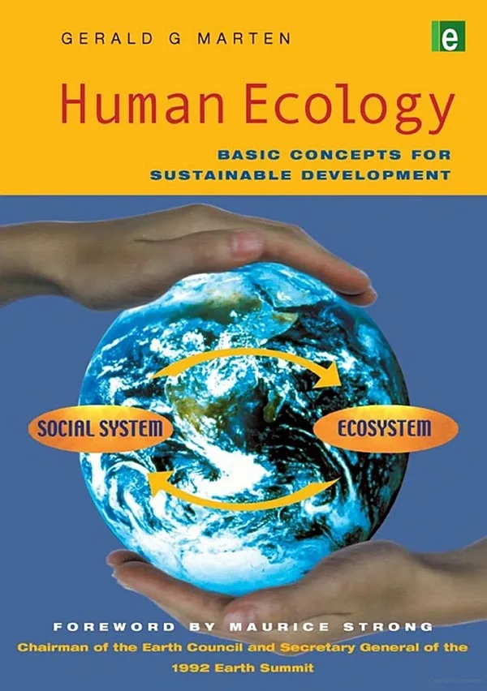

Human Ecology
Basic Concepts for Sustainable Development
Human ecology is the study of how human social systems relate to and interact with the ecological systems on which they depend. This book introduces basic principles in an accessible, story-laden format. It explains how ecosystems are organized and function; the interactions of human social systems with them; and how social institutions and processes contribute to or conflict with sustainability. It integrates long-standing ecological principles with more recent concepts from complex systems theory. Simple diagrams, examples, and exercises make the concepts easily understood.
- Author: Gerald G. Marten
← View the full Table of Contents.
Reviews
“A valuable step toward making human ecology a subject that everyone can and should understand…The scope and clarity of this book make it accessible and informative to a wide readership…Provides a clear and comprehensible account of concepts that can be applied in our individual and collective lives to pursue the promising and secure future to which we all aspire.”
“An extremely imaginative, novel, and innovative book, especially with respect to its content, its technique of communication, pedagogical devices for engaging students, and its ability to make the material an integral part of students’ daily thought processes. I have never before read a nook by an author who is so obviously a brilliant teacher, with enormous experience in making a complex subject compelling to diverse audiences. His treatment of the topic is remarkably interdisciplinary and comprehensive… He maintains interest using extraordinarily vivid and revealing case studies from an astonishing array of sources.”
“’Extremely well written. Marten has the gift to explain complex concepts in a way that makes you feel like you understand the fundamentals…Undoubtedly appealing to a wider audience of policy makers and policy advisers that deal with human ecological problems in practice. Also those interested in the advancement of science will find this book most interesting…An intelligent and fascinating book…Of interest for all of those who want to know why and how to respond to the multiple problems that we face today in the human-environment interface…This book is a must for all students in human ecology and those watching the field.”
“A highly original contribution to the literature of human ecology…The first introductory human ecology text to offer students a systematic framework…A useful tool for helping students to understand the extremely complex interactions between humans and their environment… Clear and precise…Simple, straightforward language, vivid illustrative examples, and maximum use of figures to illustrate key points.”
“At last a book that so clearly, timely and convincingly links human ecology to sustainable development – filling a much needed gap in appreciating the relevance of human ecology to our concerns.”
“One would be hard-pressed to find a clearer, more complete, and more usable introductory text for the application of systems concepts to human ecology. Covers a wealth of ideas and concepts in a relatively short text. [It] would make an excellent backbone for a high school or college-level introduction to human ecology, providing an explanation of concepts, which an educator could supplement with specific issues that are most relevant to the students.”
“Proficiently lays out the groundwork for human ecology as a scientific discipline…”
“An interesting slant on conventional human ecology texts…Political/environmental dynamics have been analyzed before but usually in more detailed theoretical terms: this text makes the material quite accessible to the lay reader. This is where I think the merit lies: it allows the reader to think about what is happening and why.”
“An excellent textbook for students…The author makes good use of diagrams to reinforce and explain many of his key points and arguments. This helps to make the book easily readable…as a schools and colleges text, it is outstanding.”
“The first introductory textbook on the subject. Extremely accessible and engaging it makes the ideal foundation for teachers and students. It is filled with simple diagrams, examples and exercises which makes the concepts easy to understand. It should become the standard text in the area.”
“An important contribution to the science of human ecology. It gives a clear and accessible account of the complex range of issues and of the concepts and tools required to understand and tackle them. It’s an excellent introduction for students from secondary school to university, as well as for general readers who want a guide to sustainable development…”
“This book offers an interesting overview of human ecology and introduces a wide range of concepts…The book is well presented and structured… Marten has skillfully incorporated everyday examples/metaphors to illustrate points being raised… The materials are highly accessible and should stimulate a greater student interest and awareness in the subject…The book is clearly relevant to the twenty-first century and therefore appropriate for A-level students…It would be a useful general reader for the first year undergraduate students.”
“a stimulating, appropriate, and very welcome contribution to the literature on sustainable development. It deserves to be widely read.”
“It gives a clear and accessible account of the complex range of issues and of the concepts and tools required to understand and tackle them. It’s an excellent introduction for students from secondary school to university, as well as for general readers who want a guide to sustainable development.”
“A significant contribution to human ecology… Clearly written… An extremely clear and accessible account of this complex range of issues and of the concepts and tools required to understand and tackle them. Extensively supported by graphics and detailed examples, this book makes an excellent introduction for students at all levels, and for general readers wanting to know why and how to respond to the dilemmas we face.”
“An excellent text in terms of its careful definition of concepts and the structured manner in which the subject is developed… Arranges a very broadly-based, multidisciplinary subject into a coherent set of concepts… Introduces in a logical flow the concepts involved for understanding the sustainability of human society and ecosystems on the earth… For students and general readers new to the subject, it will provide a good start to understanding the complex interactions between human social systems and ecosystems…a reference for the definition of concepts, as well as a refresher for those involved in particular aspects of this broad field.”
“A real contribution to human ecology…It should be compulsory reading for every student entering human ecology classes, courses or programs.”